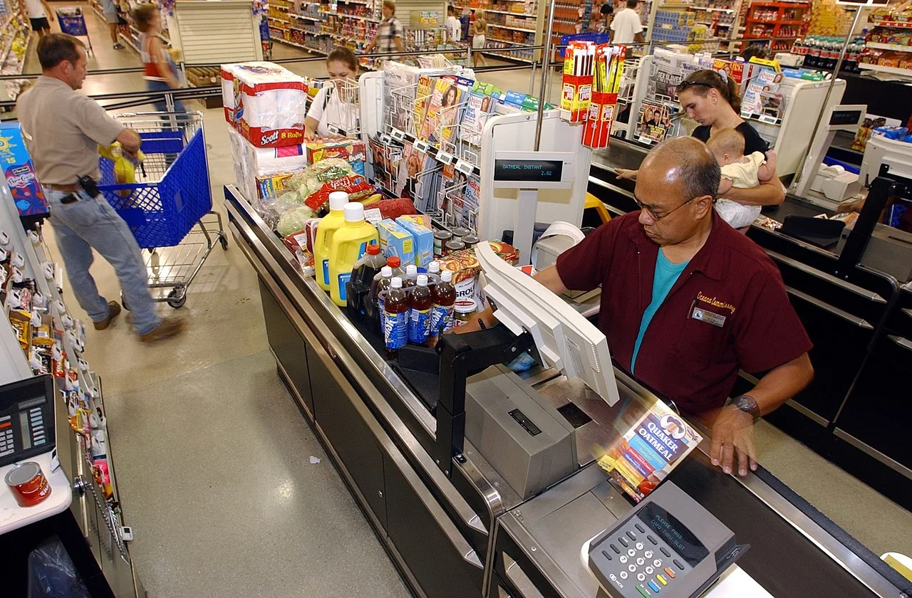

Core CPI 0.2–0.3%

Creator: U.S. Navy photo by Photographer’s Mate 1st Class Michael W. Pendergrass.. Original source: US Navy 020813-N-3235P-532 A Navy family unloads their shopping cart while purchasing groceries at the Navy Commissary located just outside Naval Air Station Oceana.jpg
Source date: 2002-08-13 · Public domain
Resized and converted to WebP; full image retained without compositing. Small navigation thumbnails use a cropped viewport; the reading and atlas show the full image.